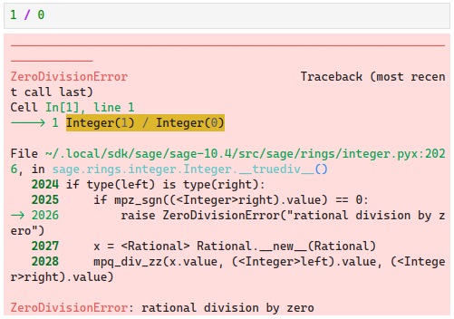

SageMath 基本语法
archive time: 2024-08-31
SageMath 就是 Python 的超集
函数的定义与使用
在 SageMath 中定义函数与 Python 中是一样的，使用 def 关键词，例如：
def self_fib_fun(n):
def inner_fib(n, a, b):
if n == 0:
return a
elif n == 1:
return b
else:
return inner_fib(n - 1, b, a + b)
return inner_fib(n, 0, 1)
在使用方面，和内置的函数一样，都是使用小括号和可能需要的参数来调用
self_fib_fun(10)
# => 55
在定义函数时，函数的参数可以有默认值， 那么有默认值的参数在函数调用时就可以不传递参数，而是使用默认值，例如：
def another_fib_fun(n, a = 0, b = 1):
if n == 0:
return a
elif n == 1:
return b
else:
return another_fib_fun(n - 1, b, a + b)
不传递参数的情况：
# a = 0, b = 1
another_fib_fun(10)
# => 55
也可以显式传递参数：
# b = 1
another_fib_fun(10, a = 1)
# => 89
虽然不推荐，但是也可以根据位置传递参数：
# a = 1, b = 1
another_fib_fun(10, 1)
# => 89
# a = 1, b = 2
another_fib_fun(10, 1, 2)
# => 144
类似的，对于所有的参数，都可以使用名称来传递参数值，这样就可以按照自己想要的顺序传递参数，例如：
another_fib_fun(a = 1, n = 10, b = 2)
# => 144
作用域
在 SageMath 和 Python 中，作用域是通过缩进来区分的， 所以每个缩进的大小都应该要一致，一般是 个空格
如果缩进不一致，则会出现 IndentationError：

图中可能不明显，错误之处在于 return v 一行的缩进是 个空格，
而其他地方使用的都是 个空格，缩进不匹配，导致解释器不知道具体的层级
流程控制
一般来说，控制流有三种，分别是 顺序执行，分支执行 和 循环执行
默认情况下，SageMath 和 Python 都是自上而下执行的，也就是所谓的顺序执行， 但是我们有办法让执行顺序改变，也就是所谓的流程控制
例如在之前的 self_fib_fun 中看到的 if ... elif ... else ... 就是分支执行
这种分支执行顺序是通过某种条件来判断状态，进而选择一条分支来执行，其他的分支就被放弃
a = 10
# 分支执行
if a == 1:
print("a is ONE")
elif a == 2:
print("a is TWO")
elif a == 3:
print("a is THREE")
else:
print(f"a is {a}")
# => a is 10
而循环执行则是通过 while ... 和 for ... in ... 的形式来完成的
for i in range(5):
print(i, end=" ")
else:
print()
a = 10
while a > 0:
print(a, end=" ")
a = a - 1
else:
print()
# =>
# 0 1 2 3 4
# 10 9 8 7 6 5 4 3 2 1
在循环执行中还可以通过 break 或者 continue 来中断或者跳过某次循环，
而循环执行中的 else 是在循环正常结束的时候执行的内容：
for i in range(10):
print(f"ok for {i}")
if i == 2:
break
else:
print("finished")
# =>
# ok for 0
# ok for 1
# ok for 2
上述代码中，由于循环是通过 break 结束的，所以并不会输出 finished
可迭代对象
在 for ... in ... 循环中，in 后面的对象被称为 可迭代对象（Iterable）1
在 SageMath 和 Python 中，最常见也是最实用的可迭代对象就是 列表（List）
通常情况下，可以通过 list() 函数来将可迭代对象变成一个列表，例如：
list(range(1, 15, 2))
# => [1, 3, 5, 7, 9, 11, 13]
并且列表中的元素的类型不固定，可以是任意类型的对象，并且列表的索引是从 开始的
x = var("x")
# 定义并初始化一个列表
v = [1, "hello", 2/3, sin(x^3)]
# 通过索引获取列表中的值
bool((v[3]).subs(x = 3) == sin(27))
# => True
可以通过
bool()函数判断两个表达式是否相等
对于列表，常用的函数有 len()，append()，以及 del 操作符
除了列表，字典，或者说关联列表，也是常用的一种可迭代对象
d = {
"hi": "hello",
pi: e
}
d["hi"] == "hello"
# => True
字典的每个元素都可以看成是一个键值对， 其中 键 是用于索引的元素，值 是每个键对应的元素， 元素的类型对是不固定的，但是作为 键 的元素一定要是 不变的
bool(d[pi] == e)
# => True
自定义可迭代对象
除了自带的一些可迭代对象和类型，SageMath 和 Python 还给了我们自定义类型的能力：
class Odds(list):
def __init__(self, n):
self.n = n
list.__init__(self, range(1, n+1, 2))
def __repr__(self):
return f"odds positive numbers up to {self.n}."
odd7 = Odds(7)
odd7
# => odds positive numbers up to 7.
这里，我们定义了一个类型 Odds，其中 Odds 是基于 list 类型的，
这在 Python 中称为继承关系，list 是 Odds 的父类，
Odds 是 list 的子类
类似的，我们也可以使用 list() 函数将 Odds 转变为一个列表
list(odd7)
# => [1, 3, 5, 7]
对于 odd7，我们也可以进行索引和迭代：
odd7[2]
# => 5
后记
SageMath 和 Python 语法几乎一模一样，仅有一些细节上有区别， 这既是好事，降低了使用者的学习门槛，也方便已经熟悉 Python 语法的人使用 SageMath， 也是坏事，因为 Python 的与 JavaScript 类似的动态类型，让 Python 变得不再可靠， 如果出现错误，除了需要花时间排查逻辑上的问题，还需要花时间去检查语法问题
-
可迭代对象.Python Docs [DB/OL].(2024-08-29)[2024-08-31]. https://docs.python.org/zh-cn/3/glossary.html#term-iterable ↩